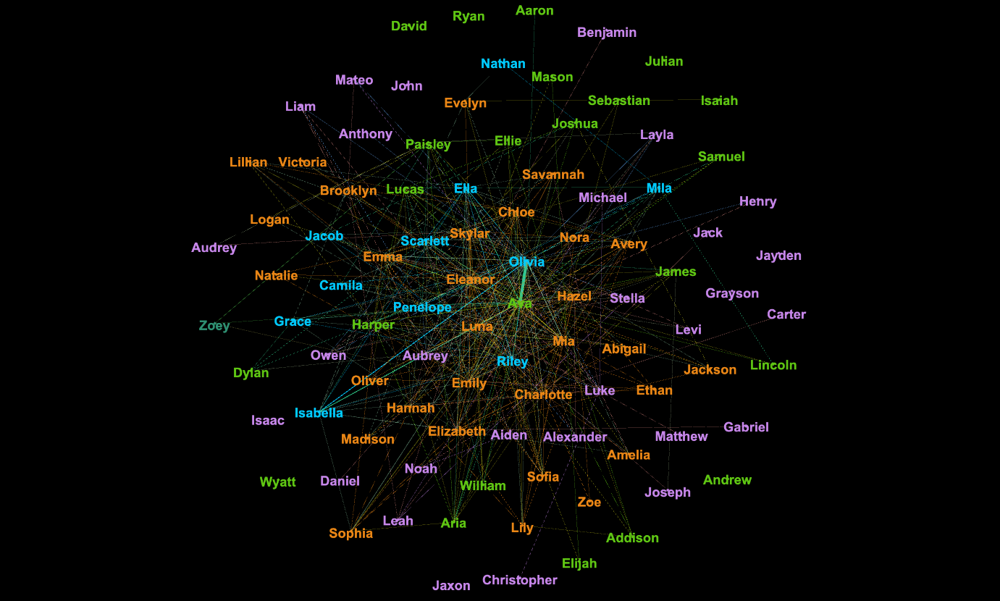

Research Analyst at Course5 Intelligence 2017-2019
My name is Nakul Agrawal and I am a data scientist from India, currently living in the United States.
My history with data started when I worked at Course5i as a Research Analyst for Advanced Analytics team, right after my bachelors. Until then, my only programming experience had been in high school, when I learned a little bit of C and Visual Basic. But at Course5i we used R, SPSS and Python, and I was happy to get back to coding. As part of my job, I analyzed and modeled survey data for customer insights in 25+ projects. I took part in standard and ad-hoc studies, process optimizations and automations, new analysts training and supervision, and co-ordinated with business development team to prepare POCs.
Inspired by the transformational power I saw data can have while simultaneously aware that I needed to skill-up, I applied and was accepted into Carlson School of Management, University of Minnesota’s Masters in Business Analytics program. This one year accelerated program is centered around four pillars of analytics i.e. descriptive, predictive, causal and predictive.
During my time at Carlson, I worked on predicting vehicle traffic on Minneapolis-St Paul Westbound highway using linear regression, used classification techniques to predict cancer, and used neural networks for Kaggle competition of classifying dogs vs cats. I attended multiple events where I presented my work on Graph Theory and Democratizing Big Data Analysis. I also interned with a B2B2C financial technology start-up where I built a comprehensive solution for customer churn. Many of my projects done at Carlson have been shared on my Github.
I created this blog as a way of sharing my portfolio and some of the projects I worked on during my time at Carlson, but my goal is to take it beyond that and keep posting whatever interesting things I come across. I hope this is both fun and useful for you to read, and I’m more than happy to receive any comments or feedback you may have!
Data Science and Analytics Courses:
Business/Management Courses:
Nakul did his Bachelors from Symbiosis International University, India.
Relevant Coursework:
Along with his bachelors in engineering, Nakul also pursued a diploma in Business Administration to understand the applications of technology in different business sectors.
Relevant Coursework:
While doing his masters at Carslon School of Management, Nakul worked with 3 companies.

How graph theory can be used to understand employees. Demonstration using WhatsApp chat data.